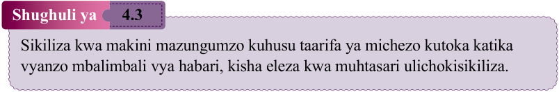
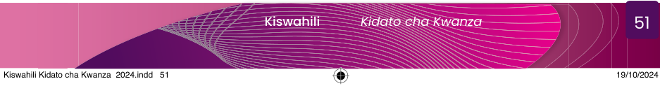

kule walikozoea, ambako siku zote kulikuwa hakuwatupi mkono, kwani biashara ya kuuza mifugo ilikuwa ngumu. Katika uvuvi walikuwa wakiambulia chochote kama wahenga wanenavyo, “Jembe halimtupi mkulima.” Waliamua kurudi kwenye uvuvi ambao waliuzoea na kuacha kufanya biashara ambazo hawana uzoefu nazo. Wavuvi hao walifanikiwa kupata samaki si haba.
Maswali
1.Hadithi uliyoisoma inahusu nini?
2.Kwa nini zoezi la ukalafati lilishindikana?
3.Unafikiri mwandishi alimaanisha nini aliposema, “Jembe halimtupi mkulima” na “Usipoziba ufa utajenga ukuta”?
4.Kwa nini wajasiriamali waliamua kuacha kununua na kuuza ng’ombe na kurudia shughuli ya uvuvi wa samaki?
5.Ungekuwa wewe ni mvuvi ungewashauri nini watu wengine kuhusiana na shughuli ya uvuvi?

Shughuli ya 4.3
Sikiliza kwa makini mazungumzo kuhusu taarifa ya michezo kutoka katika vyanzo mbalimbali vya habari, kisha eleza kwa muhtasari ulichokisikiliza.
Kushiriki katika majadiliano ya miktadha mbalimbali

Wasikilize wanafunzi wenzako wanaposoma dayolojia ifuatayo, kisha jibu maswali yanayofuata.
Nanzia:(Akitabasamu huku akimtazama rafiki yake.) Hee! Helena! Helena habari za likizo?
Helena:Ni nzuri Nanzia.
Nanzia:Habari za Masasi?
